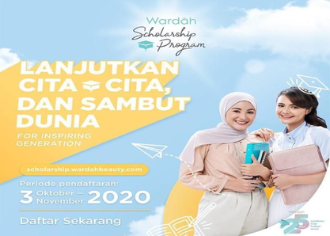

Program Beasiswa Wardah untuk Mahasiswi Semester 3 PTN di Indonesia
Bagi kamu mahasiswi semester 3 yang sedang mencari beasiswa, yuk ikuti program beasiswa berikut! Beasiswa Wardah Scholarship Program ditawarkan bagi mahasiswi semester 3 Program D4/S1 yang berkuliah di 30 Perguruan Tinggi Negeri yang bekerjasama. Beasiswa ini merupakan program CSR Wardah di bidang pendidikan yang bertujuan untuk mendukung perempuan Indonesia untuk melanjutkan cita-cita dan siap menghadapi dunia.
Program utama yang didapatkan dari Beasiswa Wardah Scholarship Program adalah bantuan dana yang diberikan setiap bulannya hingga lulus, program pengembangan diri untuk membantu mempersiapkan penerima beasiswa untuk siap menghadapi dunia, serta program kerelawanan yang bertujuan untuk melatih kepedulian penerima beasiswa terhadap permasalahan-permasalahan yang terjadi di sekitarnya. Dengan program-program ini diharapkan para penerima beasiswa dapat tumbuh menjadi seorang pemimpin yang memiliki karakter kuat dan kepedulian yang tinggi.
Persyaratan Beasiswa Wardah Scholarship Program :
- Mempunyai prestasi akademik dan non akademik yang baik.
- Merupakan mahasiswi semester 3 pada saat periode pendaftaran berlangsung.
- Program beasiswa ini diutamakan diberikan kepada mahasiswi yang berasal dari keluarga kurang mampu.
- Merupakan mahasiswi D4/S1 dari Perguruan Tinggi Negeri mitra Beasiswa Wardah Scholarship Program.
- Belum menikah.
- Tidak sedang mendapatkan beasiswa dari fakultas, universitas, lembaga atau pihak ketiga lainnya.
- Mendapatkan rekomendasi dari pihak Rektorat atau minimal Dekanat.
- Bersedia mengikuti seluruh kegiatan pengembangan diri serta kerelawanan yang dilaksanakan oleh Wardah beserta mitra beasiswa.
- Program beasiswa ini diberikan tanpa ikatan kedinasan atau apapun terhadap mahasiswi penerima beasiswa maupun pihak kampus.
Cara Mendaftar:
Download tata cara mendaftar di PdfBeasiswa Top 3
-

Program Beasiswa Wardah
Bagi kamu mahasiswi semester 3 yang sedang mencari beasiswa, yuk ikuti program beasiswa berikut! Beasiswa Wardah Scholarship Program ditawarkan bagi mahasiswi semester 3 Program D4/S1 yang berkuliah di 30 Perguruan Tinggi Negeri yang bekerjasama. -

Beasiswa Jombang
Bagi kamu warga Jombang yang sedang mencari beasiswa kuliah, tawaran berikut ini bisa kamu pertimbangkan! Program Beasiswa Jombang Prestasi BAZNAS ditawarkan oleh Baznas Kabupaten Jombang bagi mahasiswa S1 PTN/PTKIN maksimal semester 5. -

Beasiswa Kemendikbud
ementerian Pendidikan dan Kebudayaan kembali menawarkan Beasiswa Unggulan Masyarakat Berprestasi bagi masyarakat Indonesia. Program ini merupakan beasiswa dalam negeri untuk mahasiswa S1, S2, dan S3.